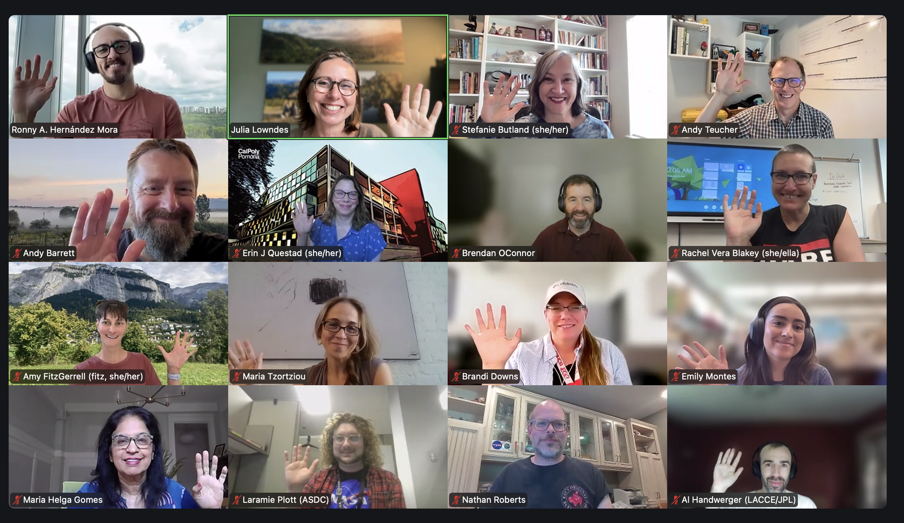
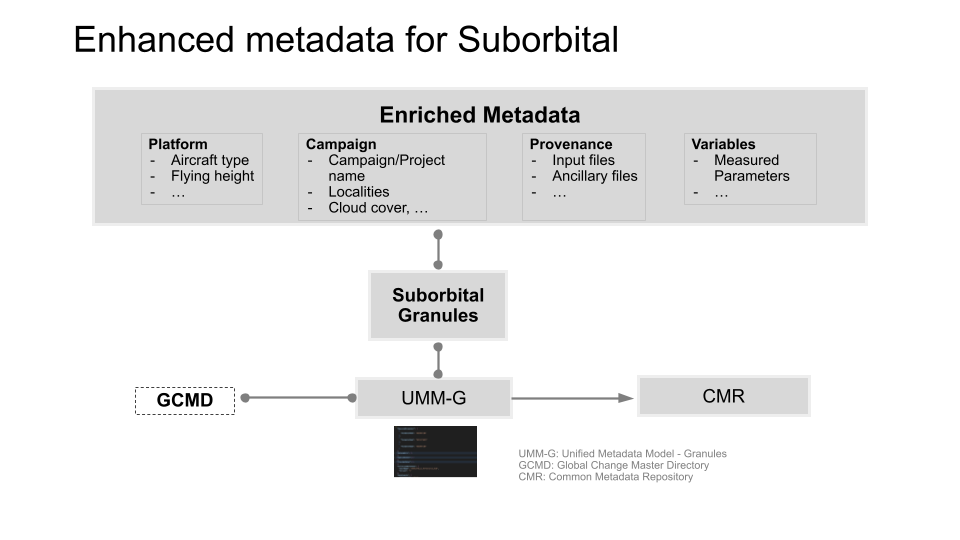

NASA Openscapes supports different suborbital science groups leveraging their expertise and programming - 2026 Champions Recap
Rupesh Shrestha ![]()
Michele Thornton
Ian Carroll
Ronny Hernández Mora
Andy Teucher
Julie Lowndes
Stefanie Butland
This spring we had our 2026 NASA Champions Cohort (aka Openscapes Suborbital Clinic) with a twist: 4 sessions over one month with a suborbital emphasis. Most of our lessons were taught as usual, with NASA Openscapes Mentor Ian Carroll (OB.DAAC) presenting the Better Science lesson in the first call. We also included 2 new lessons: Metadata strategies for suborbital data by NASA Openscapes Mentor Rupesh Shrestha (ORNL) and Documenting with notebooks by Openscapes’ newest team member Ronny Hernandez Mora! We planned and led this Cohort on a short timeline to maximize early availability by the EVS-4 science teams. We plan to host biweekly coworking with EVS-4 teams (it’s ok if team members didn’t participate in Champions!) and NASA Mentors, starting in September. There are some shared needs already surfaced and we’ll see what folks want to prioritize and how we can support.
Quicklinks:
- Cohort webpage: https://nasa-openscapes.github.io/2026-nasa-champions/
- Better Science for Future Us (slides, video), by Ian Carroll Associate Research Scientist at the University of Maryland Baltimore County working for NASA Goddard Space Flight Center.
- Metadata for Suborbital Data Publication (slides, video), by Rupesh Shrestha and Michele Thornton research staff scientists at Oak Ridge National Laboratory (ORNL), and NASA Openscapes Mentors.
- Project overview blog: Supporting NASA suborbital science teams to develop reproducible workflows
Cross-posted at
NASA Openscapes Mentors supporting suborbital teams
The NASA Openscapes Mentor community includes people across NASA Earth science data centers (DAACs) that collaborate to deliver work aligned with NASA ESDIS goals to enable science, enriched by coordinating with the open science community beyond NASA. They have created “go-to” resources for all users of NASA Earthdata – such as the earthaccess Python library and tutorials in the Earthdata Cloud Cookbook. Over the last five years, Mentors have developed these resources as a supportive community in response to teaching hundreds of NASA Earthdata users via workshops and events together, where they identify and rapidly respond to common needs then iterate through active use, documentation, and further teaching.
This spring NASA Openscapes Mentors focused on supporting the Suborbital Community, focused on the Earth Venture Suborbital EVS-4 Mission teams. NASA Earthdata has volumes of remote sensing data collected by platforms in space, air, water, and land. Substantial suborbital data is collected from measurements via airplanes, ground networks, and field measurements on land, boats, and buoys. Suborbital science teams are teams that create and use suborbital data via NASA programs like EVS-4. The science teams use suborbital data to calibrate and validate satellite data, as well as to conduct other awesome research linked to understanding complex local processes (About the Airborne Science Program) like studying Arctic coastlines via the Frontlines of Rapidly Transforming Ecosystems (FORTE) mission and glaciers and ice sheets via the Snow4Flow mission. NASA is also currently developing a SoAR (Suborbital Archive Readiness) Team and other parts of NASA to collaborate across the agency to support science teams. This Cohort was an opportunity to begin onboarding the SoAR team as NASA Openscapes Mentors. See further details in our project overview blog: Supporting NASA suborbital science teams to develop reproducible workflows.
This Champions Cohort had a good diversity of EVS-4, DAACs, and SoAR team members., PIs from the EVS-4 projects FORTE and Landslide Change Characterization Experiment (LACCE) and the Deputy PI for Snow4Flow participated. It felt like the “timing is right” for these people to all be together. NASA Openscapes Mentors Ian Carroll (OB.DAAC) and Rupesh Shrestha (ORNL) taught great lessons that resonated with the participants, and developed materials to reuse.

Impact: What participants learned
“My big takeaway is that Open Science happens by choice, but that choice is a bunch of small choices such as file naming conventions, appropriate metadata, and inclusiveness.” - from our shared notes doc in the 2026 NASA Openscapes Champions Cohort
Across all sessions’ discussions and notes, one theme was repeatedly mentioned in one way or another: the importance of documentation. Documentation can take many forms such as issues on a platform like GitHub, as README files in project repositories, as notebooks that explain code or onboarding procedures, as metadata with consistent annotations, or as online handbooks describing team culture and workflows. Regardless of the format, documentation helps make knowledge accessible and visible. Instead of information living in the mind of only a few individuals, it can become a shared resource that anyone in the team can learn from, contribute to, and improve over time. By documenting workflows and practices openly, teams can create systems that are easier to maintain, adapt, communicate and improve over time.
This idea of documentation was embedded across all sessions. From Call 1 we gained a better understanding about the Openscapes Mindset: How to make our open science pathway enjoyable, how to collaborate better, communicate, share our progress and encourage our peers! We also explored the topic of “Better Science for Future Us” with practical examples and experiences from real life shared by Ian Carroll from OB.DAAC. With a better understanding of the mindset we focused on Project Management during Call 2. Here we learned how to combine all the moving parts of a research project (tasks, data management, code, and team work) in a centralized space where we can have asynchronous communication. This is where a platform like GitHub comes in handy. We practiced how to use the web interface, create markdown documents, understand what are issues, how we can describe a task, tag team members, use labels, establish priorities, and last but not least, to use emojis as a way to quickly communicate I agree / I’m reading this / disagree / good job and so on.
During Call 3 we learned that team work requires more than collaborative tools and well defined workflows. Their effectiveness depends on the people using them and the Team Culture. One of the central topics was psychological safety: creating a space where team members feel comfortable asking questions, sharing ideas, expressing concerns, and making mistakes without fear of any judgement. The discussions emphasized the important role that leaders play in setting the tone and encouraging a culture of trust, collaboration, and inclusion. We also explored Documentation with Notebooks and the main areas of documentation: team, project, data, and code management. Even when we can use different tools for each of those areas, the emphasis was on notebooks due to their usefulness by allowing us to combine narrative text with code, visualizations, and results in one place. Also we can take advantage of publishing tools available on GitHub to transform local notebooks into a website and online books that can be easily shared across team members.
In our last session we learned a lot about metadata and how important it is for any mission and research project, but even more when you are working with NASA suborbital data due to the high variability in how it is collected! The lesson “Metadata for Suborbital Data Publication” was facilitated by Rupesh Shrestha and Michele Thornton of ORNL, who taught us what metadata is, the role of structured and standardized metadata, and how it improves data discoverability and data usability. We also learned about concepts such as data collection, data granules, and explored the enriched metadata requirements commonly associated with suborbital datasets. Participants said this was an important overview and good timing to be thinking about metadata as they are at the beginning of their missions.
We received good feedback in the sessions and the survey, including:
- “It made me more comfortable with suborbital data which will make my work as a data curator much easier.”
- “Better standardization and documentation to help my future self and others as they join the team.”
- “This is exactly what is supposed to happen: celebrate that NASA Openscapes provided the expertise and program to bring together different suborbital groups.”
What we did: NASA Champions Cohort overview
This NASA Openscapes Champions Cohort took place over 4 weekly virtual sessions (digest_1, digest_2, digest_3, digest_4). This was a compressed and lightly modified version of our normal series, tailored for suborbital science teams. Each cohort call included a welcome and code of conduct reminder and two teaching sessions with time for reflection in small groups or silent journaling and group discussion before closing with suggestions for future team meeting topics (“Seaside Chats”), and Open Science Tips. All topics and the slides presented are shared on the 2026 Cohort page.
Openscapes lessons develop mindsets around “Future Us” (working for yourself with an eye towards other contributors) and “Forking as a worldview” (expecting that the thing you need exists, finding it and crediting it, and building from it, openly). We taught most of the core lessons: Open mindset; Better science for future us; GitHub for publishing & project management; team culture – which Openscapes has refined in previous 30 Champions Cohorts. We also had key iterations to the series:
- Better science for future us: This lesson was contributed by Ian Carroll (OB.DAAC, details in Quicklinks above). Ian used the powerful analogy of moving from being a trail user to a trail maintainer to illustrate what it means to gradually step-up your participation in open science.
- Documenting with notebooks: This is a new lesson where we covered areas of documentation, tools to document, and the importance of making documentation part of daily workflows. We put emphasis on notebooks such as Quarto or Jupyter, and on taking advantage of available tools from GitHub to publish the notebooks as webpages making them easier to share, communicate, and maintain across a team.
- Metadata for suborbital data publication: This lesson focused on the role of metadata for subortbital data and was contributed by Rupesh Shrestha and Michele Thornton (ORNL DAAC) – and is full of useful links. Because suborbital observations are collected under highly variable conditions, enriched metadata plays an important role to describe the context of the data. For example, the same instrument can fly on different platforms, at different altitudes, swath widths, and pixel sizes. Calibration parameters may vary across campaigns, and factors such as aircraft movement, weather, and lighting conditions can affect the observations. Enriched metadata captures these details, supporting data interpretation, discoverability, and reuse.

This Champions cohort was also used as onboarding for new NASA Openscapes Mentors - Brandi Downs (PO.DAAC), Nathan Roberts (LP DAAC), and Mikala Beig (NSIDC, who has been a Mentor but not in a cohort before - she had good insights in debriefs). This is an approach that has been successful for years of NOAA Fisheries Champions Cohorts, but is not something that we have done explicitly with NASA.
Across all sessions, we established and reinforced the Openscapes mindset. This mindset is not always taught explicitly, but rather it is experienced through a set of practices and workflows that are consistently applied throughout the cohort. These practices are intentional and are part of the Openscapes culture.
One clear example is the use of shared agenda documents, where all the participants have editing permissions. The agenda documents have a structure containing links to materials, spaces for questions, notes, reflections, and serve as a shared record of the cohort’s progress. This is a transparent and participatory approach to communication and documentation.
Another practice is being intentional about time. Sessions start and finish on schedule; how much time is allocated to each activity is communicated, and any changes to the agenda are discussed with the participants during the sessions (i.e. taking a bit of more time to discuss a topic that generated interest, and reducing that time to another activity which we can lower priority). This helps to create a respectful environment where everyone’s time is valued. We do this by crossing out times (command-shift-x in Google Docs) and rewriting new times in the Google Doc, which openly communicates time changes to the facilitators and participants at the same time.
Slides, notes, and all the learning materials all shared openly with the participants. This openness encourages participants to revisit, reuse, adapt, contribute, and share the materials with other colleagues. Rather than treating the materials as “use and consume once”, Openscapes promotes a culture of reuse and adaptation. Equally important as sharing materials is ensuring that they are easy to find and access. All the links to the agendas, slides, lesson materials, online books, and the Code of Conduct are provided in multiple locations throughout the cohort materials. These multiple entry points ensure that participants can easily find what they need and reduce barriers to participation.
Regular and clear communication through different channels also helps participants to stay informed and connect throughout the cohort. Equally important is the effort to create a safe and welcoming space where people feel comfortable contributing to discussions, asking questions, and sharing experiences. This is supported through intentional practices such as recognizing the unique experiences participants bring and inviting them to share them with the group. By opening the questions to the entire cohort, Openscapes reinforces the idea that expertise is distributed across the group and that learning is a collaborative effort.
This cohort was also an opportunity to continue codifying our pre-cohort engagement infrastructure, which we were developing and testing alongside our first cohort with the European Space Agency (blog post: On-ramp to FAIR data in the EarthCODE Federation Recap of our first ESA Openscapes Champions Cohort). This work was co-led by Stef Butland and Julie Lowndes and includes a new Cohort Engagement Sheet and section in our Approach Guide. Relationships matter here, so much. We approach engagement from a mindset that the awesome scientists in our Cohorts want to learn, don’t fear change, but are very limited on time. The antidote to this challenge is trust. We worked with NASA EVS-4 leadership to give presentations at monthly EVS-4 meetings to share the opportunity. Julie also reached out and met EVS-4 PI Maria Tzortziou at the Ocean Sciences Meeting in Glasgow in February to share the early plan and welcome the FORTE team to join. Maria and 7 other team members joined from FORTE.
In this Cohort, we did not include Pathways presentations, since it was both a compressed timeline (1 month, not 2) and fewer calls (4, not 5). We used the Reflections Program prompts to help people with their Pathways Sheets in the in-between weeks, and will support folks in Coworking in the Fall instead of during the off-weeks between Cohort Calls. Additionally, this Cohort was a milestone for the Openscapes team: Stef led (“held”) the whole Cohort planning, onboarding Ronny to all the processes and supporting him and Andy to develop and deliver the Cohort, including coaching guest speakers and weekly digests. Julie led the engagement work with EVS-4 teams and then attended 3 of the 4 sessions to support live and listen rather than to lead.
EVS-4 teams, please join us for further support in Coworking Fall 2026!
To continue making progress and connections within and across EVS-4 teams and NASA Mentors, we will host biweekly NASA Openscapes Coworking sessions from September to December, on Wednesdays, from 10:30am - 12pm PT. These are drop-in and open to anyone on EVS-4 teams – bring a colleague!
Coworking sessions provide a space to work on your own projects while benefiting from shared experiences and support from others working on similar challenges. We will create breakout rooms around the themes people work on, and will have Openscapes staff and NASA Openscapes Mentors available to mentor and develop as needs emerge. During the cohort sessions, some topics were suggested as areas where additional support could be valuable such as:
- Shared, open documentation with notebooks (Quarto, Jupyter)
- How to create notebooks
- How to render notebooks locally (and what does this mean!)
- How to “deploy” notebooks as a website
- Changing/updating notebooks
- Work as a team in a notebooks (version control)
- How to create notebooks
- Collaboration in the cloud with data
- Data formats (cloud optimized, etc)
- GitHub not for hosting data but for code and documentation
- Data formats (cloud optimized, etc)
- Project management with GitHub
- Issues priorities
- Canvas
- Communication through issues vs messages on slack
- Best practices for creating READMEs
- Issues priorities
- Visualizations, like this one for BioSCape. It’s open source (github repo) so FORTE could fork and customize it. This is promising; visualizations are something that teams ask for often. However, a caution that before the metadata is finalized, it is difficult to visualize.
We also invite you: Openscapes will host a Community Call this Fall about AI and Open Communities (planning issue open to comments; stay tuned). These conversations will bring together people from different organizations to discuss how AI has impacted open communities, the role of communities beyond being a convenor for technical information exchange and learning, and how communities can adapt to continue to welcome and support people.
Citation
@online{shrestha2026,
author = {Shrestha, Rupesh and Thornton, Michele and Carroll, Ian and
Hernández Mora, Ronny and Teucher, Andy and Lowndes, Julie and
Butland, Stefanie},
title = {NASA {Openscapes} Supports Different Suborbital Science
Groups Leveraging Their Expertise and Programming - 2026 {Champions}
{Recap}},
date = {2026-07-23},
url = {https://openscapes.org/blog/2026-07-23-nasa-champions-2026},
langid = {en}
}